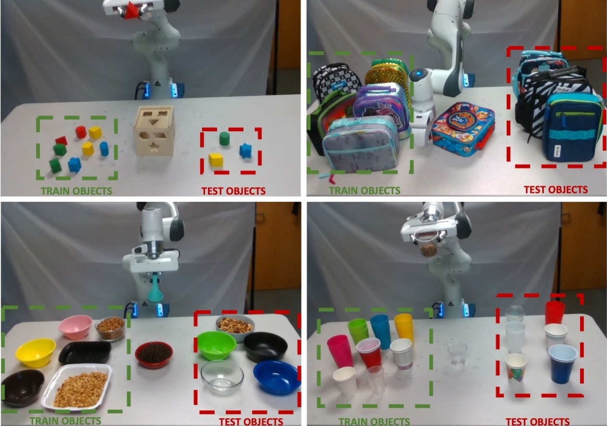
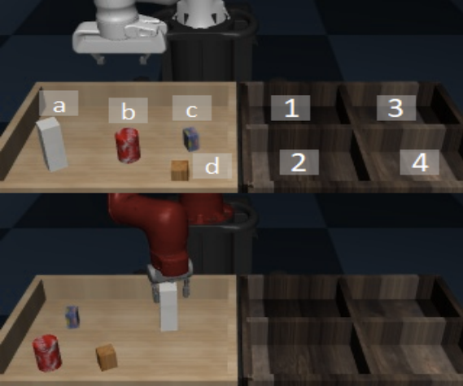
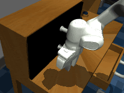

|
Sudeep Dasari
sdasari at cs dot cmu dot edu
I'm a Research Scientist at Meta Reality Labs. I aspire to build actionable foundation models, which can make robots (and other autonomous agents) generalize in the real world! My research focuses on internet-scale representation learning, robot learning, and reinforcement/imitation learning.
I recently graduated with a Robotics PhD from Carnegie Mellon's School of Computer Science. I worked with Professor Abhinav Gupta on developing stronger imitation and representation learning algorithms to solve robotic manipulation tasks.
GitHub /
Google Scholar /
Twitter
|

|
|
News
|
|
Research
I'm broadly interested in the intersection of computer vision, machine learning, and robotics. Check out my projects below!
|
|
|
The Ingredients for Robotic Diffusion Transformers
Sudeep Dasari, Oier Mees, Sebastian Zhao, Mohan Kumar Srirama, Sergey Levine
International Conference on Robotics and Automation (ICRA), 2024
webpage |
abstract |
bibtex |
paper
In recent years roboticists have achieved remarkable progress in solving increasingly general tasks on dexterous robotic hardware by leveraging high capacity Transformer network architectures and generative diffusion models. Unfortunately, combining these two orthogonal improvements has proven surprisingly difficult, since there is no clear and well-understood process for making important design choices. In this paper, we identify, study and improve key architectural design decisions for high-capacity diffusion transformer policies. The resulting models can efficiently solve diverse tasks on multiple robot embodiments, without the excruciating pain of per-setup hyper-parameter tuning. By combining the results of our investigation with our improved model components, we are able to present a novel architecture, named \method, that significantly outperforms the state of the art in solving long-horizon ($1500+$ time-steps) dexterous tasks on a bi-manual ALOHA robot. In addition, we find that our policies show improved scaling performance when trained on 10 hours of highly multi-modal, language annotated ALOHA demonstration data. We hope this work will open the door for future robot learning techniques that leverage the efficiency of generative diffusion modeling with the scalability of large scale transformer architectures.
@inproceedings{dasari2024ditpi,
title={The Ingredients for Robotic Diffusion Transformers},
author = {Sudeep Dasari and Oier Mees and Sebastian Zhao and Mohan Kumar Srirama and Sergey Levine},
booktitle = {International Conference on Robotics and Automation (ICRA)},
year={2024},
}
|
|
|
HRP: Human Affordances for Robotic Pre-Training
Mohan Kumar Srirama, Sudeep Dasari*, Shikhar Bahl*, Abhinav Gupta*
Robotics Science and Systems (RSS), 2024
webpage |
abstract |
bibtex |
arXiv
In order to generalize to various tasks in the wild, robotic agents will need a suitable representation (i.e., vision network) that enables the robot to predict optimal actions given high dimensional vision inputs. However, learning such a representation requires an extreme amount of diverse training data, which is prohibitively expensive to collect on a real robot. How can we overcome this problem? Instead of collecting more robot data, this paper proposes using internet-scale, human videos to extract “affordances,” both at the environment and agent level, and distill them into a pre-trained representation. We present a simple framework for pre-training representations on hand, object, and contact “affordance labels” that highlight relevant objects in images and how to interact with them. These affordances are automatically extracted from human video data (with the help of off-the-shelf computer vision modules) and used to fine-tune existing representations. Our approach can efficiently fine-tune any existing representation, and results in models with stronger downstream robotic performance across the board. We experimentally demonstrate (using 3000+ robot trials) that this affordance pre-training scheme boosts performance by a minimum of 15% on 5 real-world tasks, which consider three diverse robot morphologies (including a dexterous hand). Unlike prior works in the space, these representations improve performance across 3 different camera views. Quantitatively, we find that our approach leads to higher levels of generalization in out-of-distribution settings.
@inproceedings{srirama2024hrp,
title={HRP: Human Affordances for Robotic Pre-Training},
author = {Mohan Kumar Srirama and Sudeep Dasari and Shikhar Bahl and Abhinav Gupta},
booktitle = {Proceedings of Robotics: Science and Systems},
address = {Delft, Netherlands},
year = {2024},
}
|
|
|
DROID: A Large-Scale In-the-Wild Robot Manipulation Dataset
DROID Dataset Team
Alexander Khazatsky*, Karl Pertsch*, Suraj Nair, Ashwin Balakrishna, Sudeep Dasari, Siddharth Karamcheti, Soroush Nasiriany, Mohan Kumar Srirama, Lawrence Yunliang Chen, Kirsty Ellis, Peter David Fagan, Joey Hejna, Masha Itkina, Marion Lepert, Yecheng Jason Ma, Patrick Tree Miller, Jimmy Wu, Suneel Belkhale, Shivin Dass, Huy Ha, Arhan Jain, Abraham Lee, Youngwoon Lee, Marius Memmel, Sungjae Park, Ilija Radosavovic, Kaiyuan Wang, Albert Zhan, Kevin Black, Cheng Chi, Kyle Beltran Hatch, Shan Lin, Jingpei Lu, Jean Mercat, Abdul Rehman, Pannag R Sanketi, Archit Sharma, Cody Simpson, Quan Vuong, Homer Rich Walke, Blake Wulfe, Ted Xiao, Jonathan Heewon Yang, Arefeh Yavary, Tony Z. Zhao, Christopher Agia, Rohan Baijal, Mateo Guaman Castro, Daphne Chen, Qiuyu Chen, Trinity Chung, Jaimyn Drake, Ethan Paul Foster, Jensen Gao, David Antonio Herrera, Minho Heo, Kyle Hsu, Jiaheng Hu, Donovon Jackson, Charlotte Le, Yunshuang Li, Kevin Lin, Roy Lin, Zehan Ma, Abhiram Maddukuri, Suvir Mirchandani, Daniel Morton, Tony Nguyen, Abigail O'Neill, Rosario Scalise, Derick Seale, Victor Son, Stephen Tian, Emi Tran, Andrew E. Wang, Yilin Wu, Annie Xie, Jingyun Yang, Patrick Yin, Yunchu Zhang, Osbert Bastani, Glen Berseth, Jeannette Bohg, Ken Goldberg, Abhinav Gupta, Abhishek Gupta, Dinesh Jayaraman, Joseph J Lim, Jitendra Malik, Roberto Martín-Martín, Subramanian Ramamoorthy, Dorsa Sadigh, Shuran Song, Jiajun Wu, Michael C. Yip, Yuke Zhu, Thomas Kollar, Sergey Levine, Chelsea Finn
*Co-Lead
webpage |
abstract |
bibtex |
arXiv
The creation of large, diverse, high-quality robot manipulation datasets is an important stepping stone on the path toward more capable and robust robotic manipulation policies. However, creating such datasets is challenging: collecting robot manipulation data in diverse environments poses logistical and safety challenges and requires substantial investments in hardware and human labour. As a result, even the most general robot manipulation policies today are mostly trained on data collected in a small number of environments with limited scene and task diversity. In this work, we introduce DROID (Distributed Robot Interaction Dataset), a diverse robot manipulation dataset with 76k demonstration trajectories or 350h of interaction data, collected across 564 scenes and 86 tasks by 50 data collectors in North America, Asia, and Europe over the course of 12 months. We demonstrate that training with DROID leads to policies with higher performance, greater robustness, and improved generalization ability. We open source the full dataset, code for policy training, and a detailed guide for reproducing our robot hardware setup.
@article{khazatsky2024droid,
title = {DROID: A Large-Scale In-The-Wild Robot Manipulation Dataset},
author = {Alexander Khazatsky and Karl Pertsch and Suraj Nair and Ashwin Balakrishna and Sudeep Dasari and Siddharth Karamcheti and Soroush Nasiriany and Mohan Kumar Srirama and Lawrence Yunliang Chen and Kirsty Ellis and Peter David Fagan and Joey Hejna and Masha Itkina and Marion Lepert and Yecheng Jason Ma and Patrick Tree Miller and Jimmy Wu and Suneel Belkhale and Shivin Dass and Huy Ha and Arhan Jain and Abraham Lee and Youngwoon Lee and Marius Memmel and Sungjae Park and Ilija Radosavovic and Kaiyuan Wang and Albert Zhan and Kevin Black and Cheng Chi and Kyle Beltran Hatch and Shan Lin and Jingpei Lu and Jean Mercat and Abdul Rehman and Pannag R Sanketi and Archit Sharma and Cody Simpson and Quan Vuong and Homer Rich Walke and Blake Wulfe and Ted Xiao and Jonathan Heewon Yang and Arefeh Yavary and Tony Z. Zhao and Christopher Agia and Rohan Baijal and Mateo Guaman Castro and Daphne Chen and Qiuyu Chen and Trinity Chung and Jaimyn Drake and Ethan Paul Foster and Jensen Gao and David Antonio Herrera and Minho Heo and Kyle Hsu and Jiaheng Hu and Donovon Jackson and Charlotte Le and Yunshuang Li and Kevin Lin and Roy Lin and Zehan Ma and Abhiram Maddukuri and Suvir Mirchandani and Daniel Morton and Tony Nguyen and Abigail O'Neill and Rosario Scalise and Derick Seale and Victor Son and Stephen Tian and Emi Tran and Andrew E. Wang and Yilin Wu and Annie Xie and Jingyun Yang and Patrick Yin and Yunchu Zhang and Osbert Bastani and Glen Berseth and Jeannette Bohg and Ken Goldberg and Abhinav Gupta and Abhishek Gupta and Dinesh Jayaraman and Joseph J Lim and Jitendra Malik and Roberto Martín-Martín and Subramanian Ramamoorthy and Dorsa Sadigh and Shuran Song and Jiajun Wu and Michael C. Yip and Yuke Zhu and Thomas Kollar and Sergey Levine and Chelsea Finn},
year = {2024},
}
|
|
|
Octo: An Open-Source Generalist Robot Policy
Dibya Ghosh*, Homer Walke*, Karl Pertsch*, Kevin Black*, Oier Mees*, Sudeep Dasari, Joey Hejna, Charles Xu, Jianlan Luo, Tobias Kreiman, You Liang Tan, Dorsa Sadigh, Chelsea Finn, Sergey Levine
webpage |
abstract |
bibtex |
paper
Large policies, pretrained on diverse robot datasets have the potential to transform robot learning: instead of training new policies from scratch, such generalist robot policies may be finetuned with only a little in-domain data, yet generalize broadly. However, existing models restrict downstream users to the exact inputs and action spaces used during pretraining and the largest models are typically not available to the public. In this work, we aim to lay the ground work towards developing open-source, widely applicable, generalist policies for robotic manipulation. As a first step, we introduce Octo, a transformer-based diffusion policy trained on 800k robot trajectories from the Open X-Embodiment dataset. It can be instructed via language commands or goal images and can be effectively finetuned to robot setups with new sensory inputs and action spaces within a few hours on standard consumer GPUs. In experiments across 6 robotic platforms we demonstrate that Octo serves as a versatile policy initialization that can be effectively finetuned to new observation and action spaces.
@misc{octo_2023,
title={Octo: An Open-Source Generalist Robot Policy},
author = {{Octo Model Team} and Dibya Ghosh and Homer Walke and Karl Pertsch and Kevin Black and Oier Mees and Sudeep Dasari and Joey Hejna and Charles Xu and Jianlan Luo and Tobias Kreiman and {You Liang} Tan and Dorsa Sadigh and Chelsea Finn and Sergey Levine},
howpublished = {\url{https://octo-models.github.io}},
year = {2023},
}
|
|
|
An Unbiased Look at Datasets for Visuo-Motor Pre-Training
Sudeep Dasari, Mohan Kumar Srirama, Unnat Jain*, Abhinav Gupta*
7th Conference on Robot Learning (CoRL), 2023
webpage |
abstract |
bibtex |
arXiv
Visual representation learning hold great promise for robotics, but is severely hampered by the scarcity and homogeneity of robotics datasets. Recent works address this problem by pre-training visual representations on large-scale but out-of-domain data (e.g., videos of egocentric interactions) and then transferring them to target robotics tasks. While the field is heavily focused on developing better pre-training algorithms, we find that dataset choice is just as important to this paradigm's success. After all, the representation can only learn the structures or priors present in the pre-training dataset. To this end, we flip the focus on algorithms, and instead conduct a dataset centric analysis of robotic pre-training. Our findings call into question some common wisdom in the field. We observe that traditional vision datasets (like ImageNet, Kinetics and 100 Days of Hands) are surprisingly competitive options for visuo-motor representation learning, and that the pre-training dataset's image distribution matters more than its size. Finally, we show that common simulation benchmarks are not a reliable proxy for real world performance and that simple regularization strategies can dramatically improve real world policy learning.
@inproceedings{dasari2023datasets,
title={An Unbiased Look at Datasets for Visuo-Motor Pre-Training},
author={Dasari, Sudeep and Srirama, Mohan Kumar and Jain, Unnat and Gupta, Abhinav},
booktitle={Conference on Robot Learning},
year={2023},
organization={PMLR}
}
|

|
Manipulate by Seeing: Creating Manipulation Controllers from Pre-Trained Representations
Jianren Wang*, Sudeep Dasari*, Mohan Kumar Srirama, Shubham Tulsiani, Abhinav Gupta
Oral at International Conference on Computer Vision (ICCV), 2023
webpage |
abstract |
bibtex |
arXiv
The field of visual representation learning has seen explosive growth in the past years, but its benefits in robotics have been surprisingly limited so far. Prior work uses generic visual representations as a basis to learn (task-specific) robot action policies (e.g. via behavior cloning). While the visual representations do accelerate learning, they are primarily used to encode visual observations. Thus, action information has to be derived purely from robot data, which is expensive to collect! In this work, we present a scalable alternative where the visual representations can help directly infer robot actions. We observe that vision encoders express relationships between image observations as \textit{distances} (e.g. via embedding dot product) that could be used to efficiently plan robot behavior. We operationalize this insight and develop a simple algorithm for acquiring a distance function and dynamics predictor, by fine-tuning a pre-trained representation on human collected video sequences. The final method is able to substantially outperform traditional robot learning baselines (e.g. 70% success v.s. 50% for behavior cloning on pick-place) on a suite of diverse real-world manipulation tasks. It can also generalize to novel objects, without using any robot demonstrations during train time.
@article{wang2023manipulate,
title={Manipulate by Seeing: Creating Manipulation Controllers from Pre-Trained Representations},
author={Wang, Jianren and Dasari, Sudeep and Srirama, Mohan Kumar and Tulsiani, Shubham and Gupta, Abhinav},
booktitle={International Conference on Computer Vision (ICCV)},
year={2023}
}
|
|
|
MyoDex: A Generalizable Prior for Dexterous Manipulation
Vittorio Caggiano, Sudeep Dasari, Vikash Kumar
40th International Conference on Machine Learning (ICML), 2023
webpage |
abstract |
bibtex |
arXiv
Human dexterity is a hallmark of motor control. Our hands can rapidly synthesize new behaviors despite the complexity (multi-articular and multi-joints, with 23 joints controlled by more than 40 muscles) of musculoskeletal sensory-motor circuits. In this work, we take inspiration from how human dexterity builds on a diversity of prior experiences, instead of being acquired through a single task. Motivated by this observation, we set out to develop agents that can build upon their previous experience to quickly acquire new (previously unattainable) behaviors. Specifically, our approach leverages multi-task learning to implicitly capture task-agnostic behavioral priors (MyoDex) for human-like dexterity, using a physiologically realistic human hand model - MyoHand. We demonstrate MyoDex's effectiveness in few-shot generalization as well as positive transfer to a large repertoire of unseen dexterous manipulation tasks. Agents leveraging MyoDex can solve approximately 3x more tasks, and 4x faster in comparison to a distillation baseline. While prior work has synthesized single musculoskeletal control behaviors, MyoDex is the first generalizable manipulation prior that catalyzes the learning of dexterous physiological control across a large variety of contact-rich behaviors. We also demonstrate the effectiveness of our paradigms beyond musculoskeletal control towards the acquisition of dexterity in 24 DoF Adroit Hand.
@article{caggiano2023myodex,
title={MyoDex: A Generalizable Prior for Dexterous Manipulation},
author={Caggiano, Vittorio and Dasari, Sudeep and Kumar, Vikash},
booktitle={International Conference on Machine Learning (ICML)},
year={2023}
}
|
|
|
Learning Dexterous Manipulation from Exemplar Object Trajectories and Pre-Grasps
Sudeep Dasari, Abhinav Gupta, Vikash Kumar
IEEE International Conference on Robotics and Automation (ICRA), 2023
webpage |
abstract |
bibtex |
arXiv |
video
Learning diverse dexterous manipulation behaviors with assorted objects remains an open grand challenge. While policy learning methods offer a powerful avenue to attack this problem, they require extensive per-task engineering and algorithmic tuning. This paper seeks to escape these constraints, by developing a Pre-Grasp informed Dexterous Manipulation (PGDM) framework that generates diverse dexterous manipulation behaviors, without any task-specific reasoning or hyper-parameter tuning. At the core of PGDM is a well known robotics construct, pre-grasps (i.e. the hand-pose preparing for object interaction). This simple primitive is enough to induce efficient exploration strategies for acquiring complex dexterous manipulation behaviors. To exhaustively verify these claims, we introduce TCDM, a benchmark of 50 diverse manipulation tasks defined over multiple objects and dexterous manipulators. Tasks for TCDM are defined automatically using exemplar object trajectories from various sources (animators, human behaviors, etc.), without any per-task engineering and/or supervision. Our experiments validate that PGDM's exploration strategy, induced by a surprisingly simple ingredient (single pre-grasp pose), matches the performance of prior methods, which require expensive per-task feature/reward engineering, expert supervision, and hyper-parameter tuning.
@inproceedings{dasari2023pgdm,
title={Learning dexterous manipulation from exemplar object trajectories and pre-grasps},
author={Dasari, Sudeep and Gupta, Abhinav and Kumar, Vikash},
booktitle={2023 IEEE International Conference on Robotics and Automation (ICRA)},
pages={3889--3896},
year={2023},
organization={IEEE}
}
|
|

|
RB2: Ranking Based Robotics Benchmark
Sudeep Dasari, Jianren Wang, Joyce Hong, Shikhar Bahl, Abitha Thankaraj, Karanbir Chahal, Berk Calli, Saurabh Gupta, David Held, Lerrel Pinto, Deepak Pathak, Vikash Kumar, Abhinav Gupta
NeurIPS Datasets and Benchmarks Track, 2021
webpage |
abstract |
bibtex |
arXiv
Benchmarks offer a scientific way to compare algorithms using scientific performance metrics. Good benchmarks have two features: (a) wide audience appeal; (b) easily reproducible. In robotics, there is a tradeoff between reproducibility and broad accessibility. If the benchmark is kept restrictive (fixed hardware, objects), the numbers are reproducible but it becomes niche. On the other hand, benchmark could be just loose set of protocols but the underlying varying setups make it hard to reproduce the results. In this paper, we re-imagine robotics benchmarks – we define a robotics benchmark to be a set of experimental protocols and state of the art algorithmic implementations. These algorithm implementations will provide a way to recreate baseline numbers in a new local robotic setup in less than few hours and hence help provide credible relative rankings between different approaches. These credible local rankings are pooled from several locations to help establish global rankings and SOTA algorithms that work across majority of setups. We introduce RB2 — a benchmark inspired from human SHAP tests. Our benchmark was run across three different labs and reveals several surprising findings.
@inproceedings{dasari2021rb2,
title={RB2: Robotic Manipulation Benchmarking with a Twist},
author={Dasari, Sudeep and Wang, Jianren and Hong, Joyce and Bahl, Shikhar and Lin, Yixin and Wang, Austin S and Thankaraj, Abitha and Chahal, Karanbir Singh and Calli, Berk and Gupta, Saurabh and others},
booktitle={Thirty-fifth Conference on Neural Information Processing Systems Datasets and Benchmarks Track (Round 2)},
year={2021}
}
|
|

|
Transformers for One-Shot Visual Imitation
Sudeep Dasari, Abhinav Gupta
4th Conference on Robotic Learning, 2020
webpage |
abstract |
bibtex |
arXiv |
video
Humans are able to seamlessly visually imitate others, by inferring their intentions and using past experience to achieve the same end goal. In other words, we can parse complex semantic knowledge from raw video and efficiently translate that into concrete motor control. Is it possible to give a robot this same capability? Prior research in robot imitation learning has created agents which can acquire diverse skills from expert human operators. However, expanding these techniques to work with a single positive example during test time is still an open challenge. Apart from control, the difficulty stems from mismatches between the demonstrator and robot domains. For example, objects may be placed in different locations (e.g. kitchen layouts are different in every house). Additionally, the demonstration may come from an agent with different morphology and physical appearance (e.g. human), so one-to-one action correspondences are not available. This paper investigates techniques which allow robots to partially bridge these domain gaps, using their past experience. A neural network is trained to mimic ground truth robot actions given context video from another agent, and must generalize to unseen task instances when prompted with new videos during test time. We hypothesize that our policy representations must be both context driven and dynamics aware in order to perform these tasks. These assumptions are baked into the neural network using the Transformers attention mechanism and a self-supervised inverse dynamics loss. Finally, we experimentally determine that our method accomplishes a ~2x improvement in terms of task success rate over prior baselines in a suite of one-shot manipulation tasks.
@inproceedings{dasari2021transformers,
title={Transformers for one-shot visual imitation},
author={Dasari, Sudeep and Gupta, Abhinav},
booktitle={Conference on Robot Learning},
pages={2071--2084},
year={2021},
organization={PMLR}
}
|
|

|
Model-Based Visual Planning with Self-Supervised Functional Distances
Stephen Tian, Suraj Nair, Frederik Ebert, Sudeep Dasari, Benjamin Eysenbach, Chelsea Finn, Sergey Levine
International Conference on Learning Representations, 2021
webpage |
abstract |
bibtex |
arXiv
A generalist robot must be able to complete a variety of tasks in its environment. One appealing way to specify each task is in terms of a goal observation. However, learning goal-reaching policies with reinforcement learning remains a challenging problem, particularly when hand-engineered reward functions are not available. Learned dynamics models are a promising approach for learning about the environment without rewards or task-directed data, but planning to reach goals with such a model requires a notion of functional similarity between observations and goal states. We present a self-supervised method for model-based visual goal reaching, which uses both a visual dynamics model as well as a dynamical distance function learned using model-free reinforcement learning. Our approach learns entirely using offline, unlabeled data, making it practical to scale to large and diverse datasets. In our experiments, we find that our method can successfully learn models that perform a variety of tasks at test-time, moving objects amid distractors with a simulated robotic arm and even learning to open and close a drawer using a real-world robot. In comparisons, we find that this approach substantially outperforms both model-free and model-based prior methods.
@inproceedings{tian2020model,
title={Model-Based Visual Planning with Self-Supervised Functional Distances},
author={Tian, Stephen and Nair, Suraj and Ebert, Frederik and Dasari, Sudeep and Eysenbach, Benjamin and Finn, Chelsea and Levine, Sergey},
booktitle={International Conference on Learning Representations},
year={2021}
}
|
 |
RoboNet: Large-Scale Multi-Robot Learning
Sudeep Dasari, Frederik Ebert, Stephen Tian, Suraj Nair, Bernadette Bucher, Karl Schmeckpeper, Siddharth Singh, Sergey Levine, Chelsea Finn
3rd Conference on Robotic Learning, 2019
webpage |
abstract |
bibtex |
arXiv |
video |
press coverage
Robot learning has emerged as a promising tool for taming the complexity and diversity of the real world. Methods based on high-capacity models, such as deep networks, hold the promise of providing effective generalization to a wide range of open-world environments. However, these same methods typically require large amounts of diverse training data to generalize effectively. In contrast, most robotic learning experiments are small-scale, single-domain, and single-robot. This leads to a frequent tension in robotic learning: how can we learn generalizable robotic controllers without having to collect impractically large amounts of data for each separate experiment? In this paper, we propose RoboNet, an open database for sharing robotic experience, which provides an initial pool of 15 million video frames, from 7 different robot platforms, and study how it can be used to learn generalizable models for vision-based robotic manipulation. We combine the dataset with two different learning algorithms: visual foresight, which uses forward video prediction models, and supervised inverse models. Our experiments test the learned algorithms' ability to work across new objects, new tasks, new scenes, new camera viewpoints, new grippers, or even entirely new robots. In our final experiment, we find that by pre-training on RoboNet and fine-tuning on data from a held-out Franka or Kuka robot, we can exceed the performance of a robot-specific training approach that uses 4x-20x more data.
@inproceedings{dasari2020robonet,
title={RoboNet: Large-Scale Multi-Robot Learning},
author={Dasari, Sudeep and Ebert, Frederik and Tian, Stephen and Nair, Suraj and Bucher, Bernadette and Schmeckpeper, Karl and Singh, Siddharth and Levine, Sergey and Finn, Chelsea},
booktitle={Conference on Robot Learning},
pages={885--897},
year={2020},
organization={PMLR}
}
|
 |
Visual Foresight: Model-Based Deep Reinforcement Learning for Vision-Based Robotic Control
Frederik Ebert*, Chelsea Finn*, Sudeep Dasari, Annie Xie, Alex X. Lee, Sergey Levine
webpage |
abstract |
bibtex |
arXiv |
blog
Deep reinforcement learning (RL) algorithms can learn complex robotic skills from raw sensory inputs, but have yet to achieve the kind of broad generalization and applicability demonstrated by deep learning methods in supervised domains. We present a deep RL method that is practical for real-world robotics tasks, such as robotic manipulation, and generalizes effectively to never-before-seen tasks and objects. In these settings, ground truth reward signals are typically unavailable, and we therefore propose a self-supervised model-based approach, where a predictive model learns to directly predict the future from raw sensory readings, such as camera images. At test time, we explore three distinct goal specification methods: designated pixels, where a user specifies desired object manipulation tasks by selecting particular pixels in an image and corresponding goal positions, goal images, where the desired goal state is specified with an image, and image classifiers, which define spaces of goal states. Our deep predictive models are trained using data collected autonomously and continuously by a robot interacting with hundreds of objects, without human supervision. We demonstrate that visual MPC can generalize to never-before-seen objects---both rigid and deformable---and solve a range of user-defined object manipulation tasks using the same model.
@article{ebert2018visual,
title={Visual foresight: Model-based deep reinforcement learning for vision-based robotic control},
author={Ebert, Frederik and Finn, Chelsea and Dasari, Sudeep and Xie, Annie and Lee, Alex and Levine, Sergey},
journal={arXiv preprint arXiv:1812.00568},
year={2018}
}
|
 |
Robustness via Retrying
Frederik Ebert, Sudeep Dasari, Alex X. Lee, Sergey Levine, Chelsea Finn
2nd Conference on Robotic Learning, 2018
webpage |
abstract |
bibtex |
arXiv |
video
Prediction is an appealing objective for self-supervised learning of behavioral skills, particularly for autonomous robots. However, effectively utilizing predictive models for control, especially with raw image inputs, poses a number of major challenges. How should the predictions be used? What happens when they are inaccurate? In this paper, we tackle these questions by proposing a method for learning robotic skills from raw image observations, using only autonomously collected experience. We show that even an imperfect model can complete complex tasks if it can continuously retry, but this requires the model to not lose track of the objective (e.g., the object of interest). To enable a robot to continuously retry a task, we devise a self-supervised algorithm for learning image registration, which can keep track of objects of interest for the duration of the trial. We demonstrate that this idea can be combined with a video-prediction based controller to enable complex behaviors to be learned from scratch using only raw visual inputs, including grasping, repositioning objects, and non-prehensile manipulation. Our real-world experiments demonstrate that a model trained with 160 robot hours of autonomously collected, unlabeled data is able to successfully perform complex manipulation tasks with a wide range of objects not seen during training.
@inproceedings{ebert2018robustness,
title={Robustness via retrying: Closed-loop robotic manipulation with self-supervised learning},
author={Ebert, Frederik and Dasari, Sudeep and Lee, Alex X and Levine, Sergey and Finn, Chelsea},
booktitle={Conference on robot learning},
pages={983--993},
year={2018},
organization={PMLR}
}
|
 |
Domain Adaptive Meta-Learning
Tianhe Yu*, Chelsea Finn*, Annie Xie, Sudeep Dasari, Tianhao Zhang, Pieter Abbeel, Sergey Levine
Robotic Science and Systems, 2018
webpage |
abstract |
bibtex |
arXiv |
video
Humans and animals are capable of learning a new behavior by observing others perform the skill just once. We consider the problem of allowing a robot to do the same -- learning from a raw video pixels of a human, even when there is substantial domain shift in the perspective, environment, and embodiment between the robot and the observed human. Prior approaches to this problem have hand-specified how human and robot actions correspond and often relied on explicit human pose detection systems. In this work, we present an approach for one-shot learning from a video of a human by using human and robot demonstration data from a variety of previous tasks to build up prior knowledge through meta-learning. Then, combining this prior knowledge and only a single video demonstration from a human, the robot can perform the task that the human demonstrated. We show experiments on both a PR2 arm and a Sawyer arm, demonstrating that after meta-learning, the robot can learn to place, push, and pick-and-place new objects using just one video of a human performing the manipulation.
@inproceedings{yu2018daml,
author = {Tianhe Yu and Chelsea Finn and Annie Xie and Sudeep Dasari and Tianhao Zhang and Pieter Abbeel and Sergey Levine},
title = {One-Shot Imitation from Observing Humans via Domain-Adaptive Meta-Learning},
booktitle = {Robotics: Science and Systems XIV, Carnegie Mellon University, Pittsburgh,
Pennsylvania, USA, June 26-30, 2018},
year = {2018},
url = {http://www.roboticsproceedings.org/rss14/p02.html},
doi = {10.15607/RSS.2018.XIV.002},
timestamp = {Fri, 29 Jan 2021 22:08:15 +0100},
}
|
 |
Deep Robotic Learning using Visual Imagination & Meta-Learning
Chelsea Finn, Sudeep Dasari*, Annie Xie*, Frederik Ebert, Tianhe Yu, Pieter Abbeel, Sergey Levine
Demonstration at Neural Information Processing Seminar, 2017
webpage |
abstract |
press coverage
A key, unsolved challenge for learning with real robotic systems is the ability to acquire vision-based behaviors from raw RGB images that can generalize to new objects and new goals. We present two approaches to this goal that we demonstrate: first, learning task-agnostic visual models for planning, which can generalize to new objects and goals, and second, learning to quickly adapt to new objects and environments using meta-imitation learning. In essence, these two approaches seek to generalize and dynamically adapt to new settings, respectively.
|
|
Course Projects
I had the privilege to work on some awesome NLP and graphics projects, during my undergraduate studies at Berkeley. Check them out below!
|

|
Fun With Words: Generating Text with Context
Sudeep Dasari, Hankun (Jerry) Zhao, William Zhao
CS-182: Deep Learning, 2018
State of the art machine translation networks can be used for conditional text generation. We leverage the Yelp dataset to train models which generate sensible 1 - 5 star reviews of resteraunts given only the establishment's name.
|
|
|
Non-Linear Raytracing
Sudeep Dasari, Jennifer Wen Hsu
CS-184 Computer Graphics, 2017
Most ray-tracing algorithms assume that light travels in a straight line from the camera into the scene. However, there are many cases where a light may travel a non-linear path (e.g mirage). We demonstrate non-linear raytracing can correctly render scenes with mirages and fata-morgana, as well as trace light passing through Gradient Optic Index Lenses.
|
Template courtesy of here
|
|